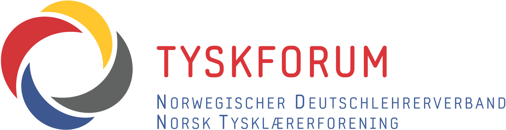
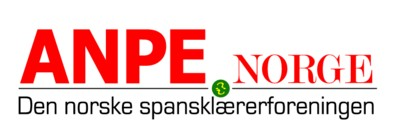
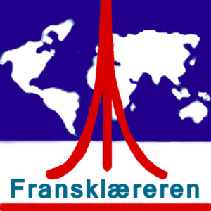

Beredskap
Norge trenger mennesker som kan forstå og samarbeide med Europa og resten av verden.
Innspillsfrist 1. november 2026
Utdanningsdirektoratet foreslår endringer som vil svekke fremmedspråkene. Mange elever på ungdomstrinnet og i videregående skole vil miste muligheten til å velge språkfag.
Vi mener språk må være en reell mulighet for alle – uansett skole og postnummer.
Aktuelt
Finn det du trenger
Velg et område. Du kan bytte uten å bla gjennom hele siden.
Frist 1. november
-dager igjenSend ditt innspill
Jeg ber Utdanningsdirektoratet sikre fremmedspråk en tydelig, tilgjengelig og forutsigbar plass i studieforberedende videregående opplæring.
Valgfrihet er bare reell når alle elever faktisk får et tilbud, uavhengig av skolens størrelse, økonomi og geografi.
Bakgrunn & informasjon
Udir utreder en ny struktur for videregående skole. I skissen kan fremmedspråk flyttes fra fellesfag til valgfritt retningsinnhold.
Forslaget er foreløpig. Udir understreker at det ennå ikke er bestemt hvilke fag som skal inngå, eller hvordan timene skal fordeles. Nettopp derfor er det viktig å si fra nå.
Blir språk et valgfag, kan små elevgrupper bli dyre å opprette. Da kan tilbudet i praksis avhenge av skolens størrelse, økonomi og geografi.
Argumenter
Språkkompetanse handler om mer enn å oversette ord. Det handler om tillit, perspektiv og evnen til å samarbeide.
Norge trenger mennesker som kan forstå og samarbeide med Europa og resten av verden.
Handel, diplomati, reiseliv og forskning bygger på språkkompetanse og tillit.
Språk gir tilgang til andre perspektiver, kilder og samfunn.
Postnummeret skal ikke avgjøre hvilke språk en elev får lære.
Argumentbank
Fremmedspråkundervisning er ikke bare et fag for spesielt interesserte; det kan berike alle elevers liv. Den praktiske tilnærmingen har vært en del av læreplanen og undervisningsmetodene i 20 år. Hvis noen elever ikke oppfatter faget som praktisk og relevant, bør ikke selve faget svekkes, men snarere bør lærerne styrkes gjennom faglig utvikling.
Fremmedspråkopplæring utvikler språkbevissthet, noe som også har en positiv innvirkning på prestasjonen i norsk og engelsk. Læringsstrategier som elever tilegner seg i fremmedspråkopplæring kan brukes gjennom hele livet for å lære andre språk.
Kompetanse i fremmedspråk er viktig for internasjonal forståelse og samarbeid. Norge er et lite, men betydningsfullt land i en stadig mer global og urolig verden. Høyere utdanning, forskning, næringsliv, diplomati og kulturutveksling er avhengige av mennesker som behersker flere språk enn norsk og engelsk.
Språk gir innsikt i samfunn, historie og kultur. Fremmedspråk er derfor et fag som bidrar til dannelse, demokratisk forståelse og interkulturell kompetanse, og dermed til dypere innsikt i politiske og sosiale prosesser globalt og i eget land. Faget styrker Norges evne til å forstå verden rundt oss.
Videregående opplæring må forberede morgendagens studenter og arbeidstakere på en global virkelighet. Kunnskapen, erfaringen og kompetansen som tilegnes ved språkutdanning er viktige for å løse dagens og fremtidens utfordringer. Det støtter opp under bredere politiske mål innen utdannings-, utenriks- og næringslivspolitikk.
Fremmedspråkferdigheter kan være avgjørende for fremtidige jobbmuligheter. Alle elever bør ha disse mulighetene. Ulikhet oppstår når fremmedspråk kun tilbys på skoler i Oslo, Trondheim og Bergen, fordi små skoler i distriktene ikke lenger har råd til faget når gruppene blir for små. Da kan heller ikke de som ønsker å lære språk gjøre det. Det er ikke et reelt valg.
Fremmedspråk er en viktig del av forberedelsen til høyere utdanning. Det bygger samfunnsborgere som er trent i læringsstrategier, logikk, disiplin, utholdenhet og kritisk og systematisk tenkning i en tid der dette stadig utfordres.
Fremmedspråklig kompetanse er dessuten en viktig forutsetning for at flere skal kunne studere i utlandet. Mange attraktive og rimeligere studier i utlandet krever dokumenterte språkkunnskaper.
Vi mener at løsningen er mer språk i videregående opplæring.
Norske myndigheter må sikre at fremmedspråklig kompetanse i større grad anerkjennes som en viktig del av studentmobilitet, internasjonalt samarbeid og norsk konkurransekraft.
Alle elever bør ha mulighet til å lære et fremmedspråk. Ulikhet oppstår når faget kun tilbys på skoler i Oslo, Trondheim og Bergen, fordi små skoler i distriktene ikke lenger har råd til å tilby faget når gruppene blir for små. Da kan heller ikke de som ønsker å lære språk gjøre det. Det er ikke et reelt valg.
Elever i studieforberedende opplæring streber etter best mulig karaktergjennomsnitt. Fag der gode karakterer eller bonuspoeng er lett oppnåelige prioriteres. Valgfag som ville være viktige på lang sikt, men som virker arbeidskrevende og vanskelige på kort sikt, har alltid en konkurransemessig ulempe. Valgfag som sjelden velges, forsvinner fra skolene.
Det er høyst sannsynlig at denne «studieretningen» vil bli oppfattet i skolene som en fortsettelse av «Media og kommunikasjon». Følgelig vil det bli tilbudt av videregående skoler som allerede har nødvendige lærere og infrastruktur. Skoler som ikke tilbyr «Media og kommunikasjon» i dag, vil ikke lenger tilby fremmedspråk i fremtiden, ikke engang for andre elever som kan velge det på tvers av studieretninger.
UDIR argumenterer for at elever skal kunne velge fremmedspråk på tvers av ulike studieretninger. I praksis vil dette kreve at 1. fremmedspråk i det hele tatt tilbys, 2. nok studenter velger et spesifikt fremmedspråk, og 3. det passer innenfor timeplanen. Teoretisk sett er det i dag allerede mulig å velge fag på tvers av ulike studieprogrammer. På videregående skoler er imidlertid dette ofte ikke gjennomførbart av organisatoriske årsaker.
UDIR skriver i utkastet sitt: «Kunnskapsgrunnlaget vårt peikar ikkje på at framandspråk bør vere felles for alle eller felles for alle som ynskjer studiekompetanse (inkludert påbygging til generell studiekompetanse).» Det eksakte datagrunnlaget for denne antagelsen er fortsatt uklart. NIFU-rapport (2026:6) «Ulike veier, samme utfall?» indikerer bare at fremmedspråk (og matematikk) kan være utfordrende fag for svært svake elever. Statistikk fra SSB viser imidlertid at de fleste elevene oppnår gjennomsnittlige til gode resultater i fremmedspråk (https://www.udir.no/tall-og-forskning/statistikk/statistikk-videregaende-skole/karakterer-vgs/).
Folk som jobber i skolen vet hva som skjer med fag som anses som arbeidsintensive når de gjøres om til valgfag. Vi savner en konsekvensutredning av en slik endring for fremmedspråkferdigheter i Norge, for tilgjengeligheten av fremmedspråk i skoler og høyere utdanning, og for like muligheter for norske elever og studenter på mellomlang og lang sikt.
Støttespillere & inspirasjon
Et sterkt innspill starter med din egen erfaring. Velg perspektivet som passer deg, og fortell hvorfor språk betyr noe.
Fortell hva du lærer av språk, og hvilke muligheter du vil miste dersom skolen ikke tilbyr faget.
Beskriv hva som skjer med fagmiljø, progresjon og elevtilbud når språkgruppene blir små.
Skriv hvorfor barn og unge bør få like språkmuligheter, uavhengig av bosted.
Forklar hvilken språk- og kulturkompetanse virksomheten din trenger.
Aktiviteter og aksjoner
Mange små handlinger over hele landet kan løfte språkdebatten ut av fagrommet og inn i samfunnet.
Finn datoer og arrangementer hos Fremmedspråksenteret.
Støtt kravet om å beholde fremmedspråk i videregående opplæring.
Arranger språkkafé, quiz, elevintervjuer eller en temadag på skolen.
Be lokale politikere, bedrifter og tidligere elever fortelle hvilke språk Norge trenger.
Til flyers og plakater
QR-koden peker til den nåværende offentlige kampanjesiden.
Våre tre krav
Tre tydelige prinsipper for framtidas språkopplæring.
Fremmedspråk må fortsatt ha en tydelig og forutsigbar plass i studieforberedende videregående og i ungdomsskolen.
Et fag er ikke et reelt valg dersom skolen ikke tilbyr det av økonomiske eller organisatoriske grunner.
Konsekvensene for elever, lærere, høyere utdanning, internasjonalt samarbeid og arbeidsliv må undersøkes før en beslutning.
Hvem er vi?
Fremmedspråk er en felles kampanje fra de tre nasjonale lærerforeningene for tysk, spansk og fransk. Sammen arbeider vi for å sikre fremmedspråk en tydelig, tilgjengelig og forutsigbar plass i norsk skole.

Norsk Tysklærerforening

Den norske spansklærerforeningen

Fransklærerforeningen i Norge
Spørsmål og svar
Nei. Udir har lagt fram skisser og ber om innspill. Fagene og timefordelingen er ikke endelig bestemt.
Nei. Vi ønsker reell valgfrihet. Dersom skoler ikke oppretter språkfag, finnes ikke valget i praksis.
Nei. Elever, foreldre, studenter, lærere, forskere, organisasjoner og virksomheter kan alle bidra.
Framtidas skole formes nå
{kind=link}
{kind=link}